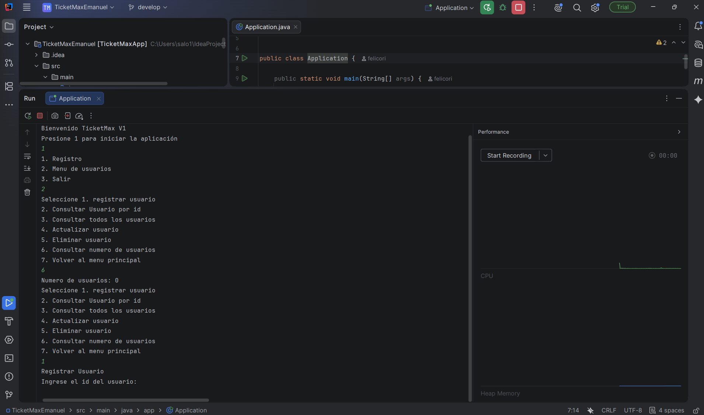
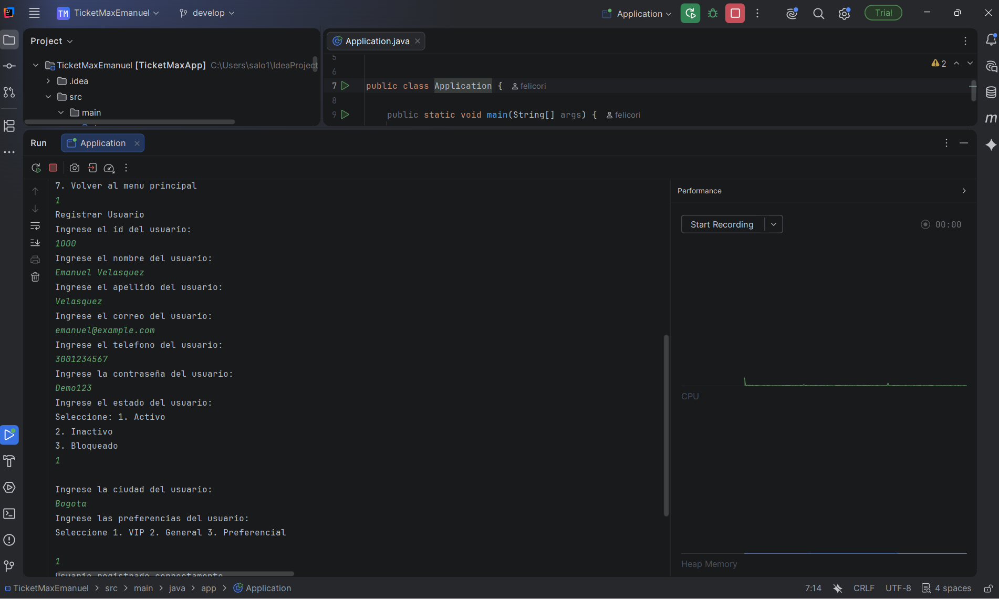
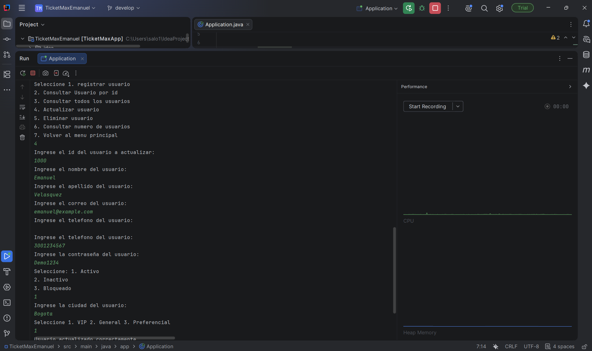
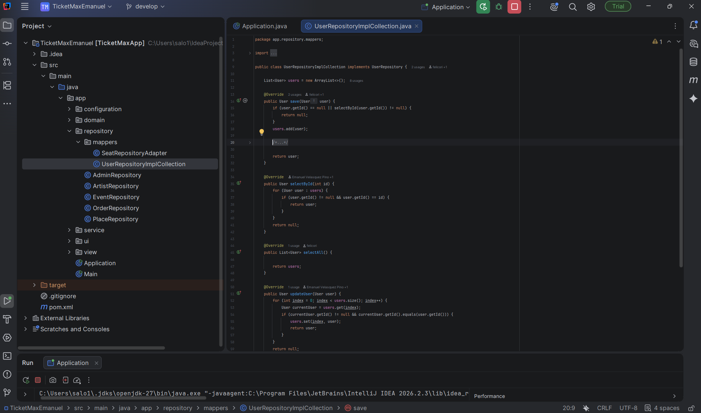
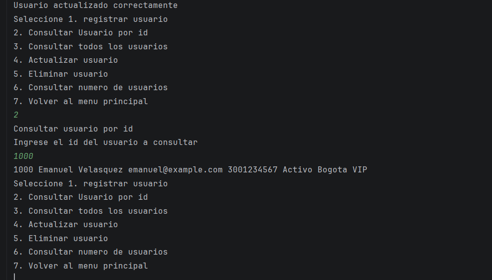
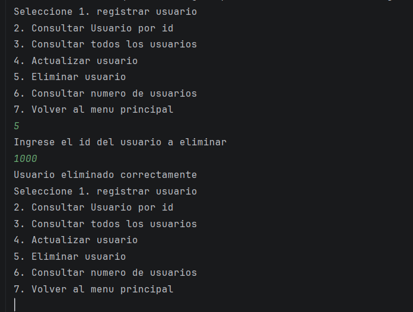
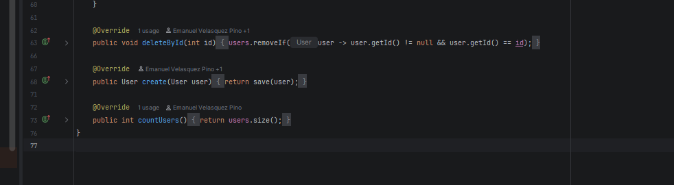
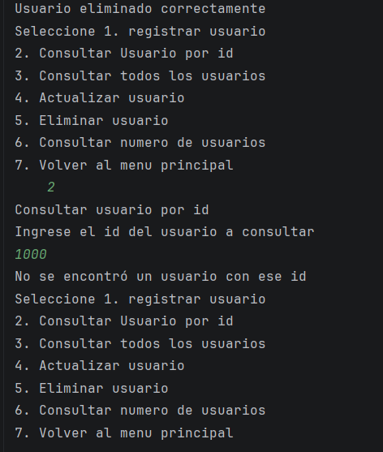
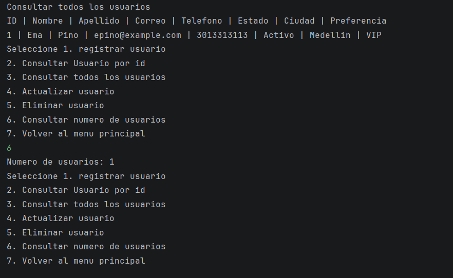

Evidencias User - Ticket MaxEvidencias de la vertical User — Ticket Max
Autor: Emanuel Velasquez Pino
Repositorio: https://github.com/EmanuelVP3/TicketMax_Emanuel
Implementacion y ejecucion de consulta por ID, actualizacion, eliminacion y conteo de usuarios desde el menu de consola.
Almacenamiento en ArrayList<User> en memoria. Los registros se pierden al cerrar la aplicacion.
La consulta se expone como selectUserById() en el servicio y selectById() en el repositorio. La eliminacion usa deleteUser() y deleteById(). countUsers() esta declarado en ambas interfaces.
Ejecucion: Application.java → main → 1 para iniciar → 2 para el menu de usuarios.
Las primeras pruebas usan el ID 1000; la ultima captura muestra un nuevo registro con ID 1.
Evidencia 1
Menu de usuarios y contador inicial en cero.

Evidencia 2
Ingreso de datos para registrar el usuario con ID 1000. La confirmacion queda parcialmente cortada.

Evidencia 3
Ingreso de datos para actualizar el usuario con ID 1000. La confirmacion completa aparece en la evidencia 5.

Evidencia 4
Implementacion de consulta por ID y actualizacion en UserRepositoryImplCollection.

Evidencia 5
Confirmacion de actualizacion y consulta posterior del ID 1000: el nombre contiene solo Emanuel, separado del apellido.

Evidencia 6
Ejecucion de la eliminacion del usuario con ID 1000 y confirmacion del resultado.

Evidencia 7
Implementacion de deleteById() y countUsers(). El contador devuelve users.size().

Evidencia 8
Consulta posterior a la eliminacion: el ID 1000 ya no se encuentra.

Evidencia 9
Listado de un nuevo usuario con ID 1 y consulta del contador: un usuario registrado.
